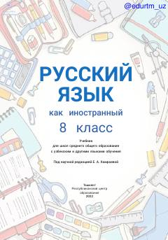

8R8-sinf o'quvchilari uchun rus tili darsligi.
Ushbu darslik O'zbekiston maktablarining 8-sinf o'quvchilari uchun rus tilini chet tili sifatida o'rganishga mo'ljallangan. Kitobda o'qish, gapirish, tinglash va yozish kabi barcha nutqiy faoliyat turlari ustida tizimli ravishda ishlash uchun materiallar jamlangan.